要编辑面:
| 1。 | 激活 编辑模式 通过选择 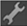 从 ModelBuilder 工具栏中。 |
| 2. | 将选择模式菜单设置为 选择面 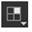 在 ModelBuilder 工具栏中，选择对象上的一个或多个面。 |
| 3. | 根据需要编辑您的选择: |
• 要平移、旋转或缩放选定的面，请拖动显示在其上的变换控制柄。要移动变换控制柄的轴心点，请按 Ctrl / Cmd Alt 在变换覆盖的中心拖动时。
提示: 如有必要，您还可以使用查看器顶部的控件来设置变换控制柄的初始位置和对齐方式 (即，每当您更改选择时使用的位置)。有关更多信息，请参见 设置平移、旋转和缩放的初始动作中心 .
• 要雕刻选定的面，请在其上单击鼠标右键并选择 雕刻 。查看器窗口周围出现彩色边框，表示操作正在进行。单击边或顶点开始雕刻。所有周围的面都以红色突出显示。在高亮显示的面内部的任何地方单击，或在高亮显示的面的边或顶点上单击，以在上一个顶点和刚刚单击的位置之间雕刻边。
|
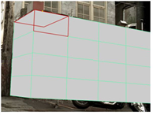 |
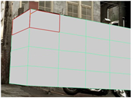 |
| 突出的面孔。 |
在里面雕刻一个新的边缘
突出显示的面孔。 |
要雕刻一个写意的边缘，按住 Ctrl/Cmd 转变 和拖动。
• 要沿循环扩展当前选择，请选择 选择面循环 从右击菜单中。面环是模型中连接的一系列面。通常，最后一张脸会再次与第一张脸相遇，形成一个循环。
要创建面循环，需要至少选择两个相邻面，以便 ModelBuilder 知道要在哪个方向展开选择。如果选定的面位于彼此的上方和下方，ModelBuilder 将垂直展开选择。如果选定的面位于彼此的左侧和右侧，ModelBuilder 将水平展开选择。如果你有多组选定的面，它们都会被展开。
|
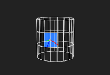 |
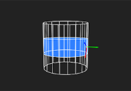 |
| 原始选择。 | 选择面循环。 |
面循环仅适用于四边多边形，称为 四边形 。如果一个面环到达一个具有任何其他边数的面，则该面环在那里结束。
• 要拉伸选定的面，请选择 挤出 从右击菜单 (或按 返回 ) 和拖动。这会将选定的面延伸到三维多边形。ModelBuilder 创建面以完成对象。
|
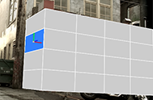 |
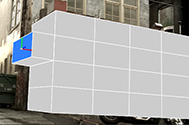 |
| 选定的面。 | 挤出选定的面。 |
如果您选择 挤出 再次从右击菜单中挤出相同的面，ModelBuilder 将在第一个多边形旁边创建另一个三维多边形。
• 要合并相邻面，请选择 合并 从右击菜单中。
• 要倒角选定的面，请选择 斜面 从右击菜单中。
查看器窗口周围出现彩色边框，表示操作正在进行。
在查看器的顶部，使用 相对插图 要定义沿周围边缘开始倒角的距离，请执行以下操作: 0.0 意味着没有距离 1.0 意味着在边缘的另一端。默认为 0.1 ,这意味着倒角从沿着每个边缘向后的 1/10 开始。
设置 圆形水平 重复初始倒角的次数，有效地舍入边缘。的值 0 只是做最初的斜面，一个值 1 斜面初始斜面的输出; 值 2 斜面初始斜面的斜面，依此类推。
当你对你输入的值感到满意时，按 返回 应用斜面。
|
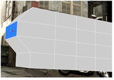 |
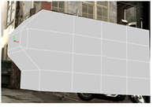 |
| 选定的面。 | 倾斜选定的面。 |
倒角类似于挤出选定的面，只是生成的多边形具有平滑的边和角。你可能想使用倒角来给你的模型添加真实感，因为现实世界的物体很少有完美的锐角。
• 要反转选定面的法线，请选择 翻转面法线 从右击菜单中。这可能很有用，例如，如果编辑操作 (如拉伸序列) 导致指向错误方向的法线。
提示:
要查看法线，请按
S
在查看器上显示查看器设置，请转到
3D
选项卡，然后激活
显示原始法线
按钮
 .
.
| 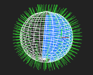 | 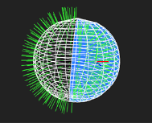 |
| 之前 翻转面法线 . | 之后 翻转面法线 . |
• 要将选定的面变成三角形风扇，请选择 Tessellate > 三角形 风扇 从右击菜单中。这将在面的中心添加一个新顶点，并将面周长周围的每个顶点连接到该顶点。如果您想快速向网格中添加更多细节，它会很有用。
|
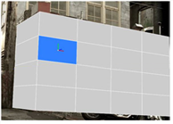 |
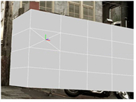 |
| 选定的面。 |
同样的脸
一个镶嵌的三角形扇子。 |
• 要删除选定的面，请选择 删除面 从右击菜单 (或按 删除 )。
|
|